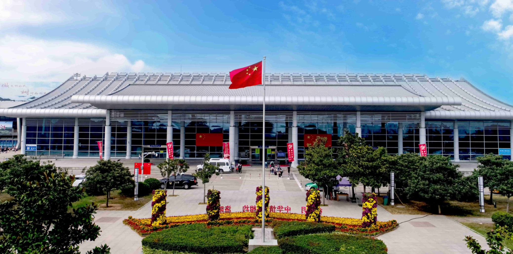

交通运输
截至2020年末，洛阳市全年全市公路运输货物周转量365.0亿吨公里，货物运输量1.6亿吨。公路旅客周转量17.5亿人公里，下降68.4%；旅客运输量0.4亿人次，下降63.5%。民航货物吞吐量701.9吨，下降39.1%；民航旅客吞吐量95.9万人次，下降37.6%。 截至2020年末，洛阳市民用汽车保有量130.3万辆，比上年末增长8.0%，其中私人汽车119.7万辆，增长8.2%。民用轿车保有量71.0万辆，增长9.2%，其中私人轿车68.0万辆，增长9.5%。
航空
洛阳北郊机场于1986年开工兴建，1987年9月26日正式通航。2008年，洛阳北郊机场改扩建工程启动，2010年4月新候机楼投入运行，新建航站楼面积14800平方米。2016年，洛阳北郊机场新增加的3个停机位和除冰坪投入使用，停机坪总面积达到62580平方米。2018年，洛阳北郊机场旅客吞吐量131.51万人次，同比增长48.72%；货邮吞吐量1339.13吨，同比下降8.81%
